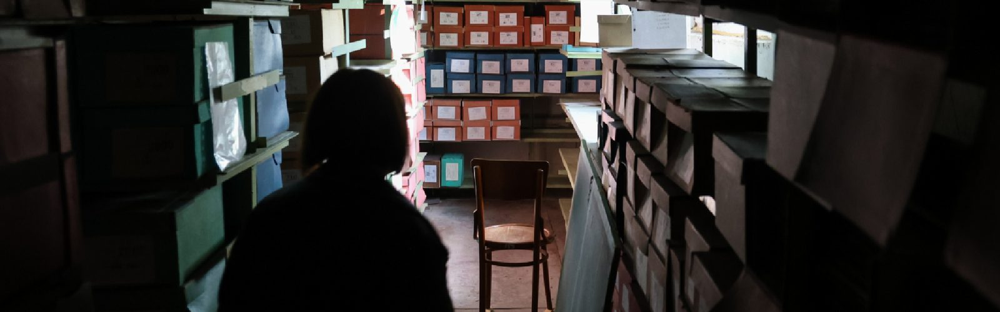
Guardians of History: How the State Archive of the Kherson Region Restores Documents Stolen by Russians
02.05.24
Before the full-scale invasion, the State Archive of the Kherson Region housed over 970,000 archival documents. The archive itself was established in 1921 (although the archival system in the city existed long before the arrival of Soviet power), and the collection was formed over decades. However, as the Russians retreated from the occupied Kherson, they stole a third of the collection, including unique documents from the periods of the city's founding, the Russian Empire, the Ukrainian revolution, and the Soviet occupation of the Kherson region. To learn how the archive's staff managed to save most of the collection, we spoke with its director, Iryna Lopushynska.
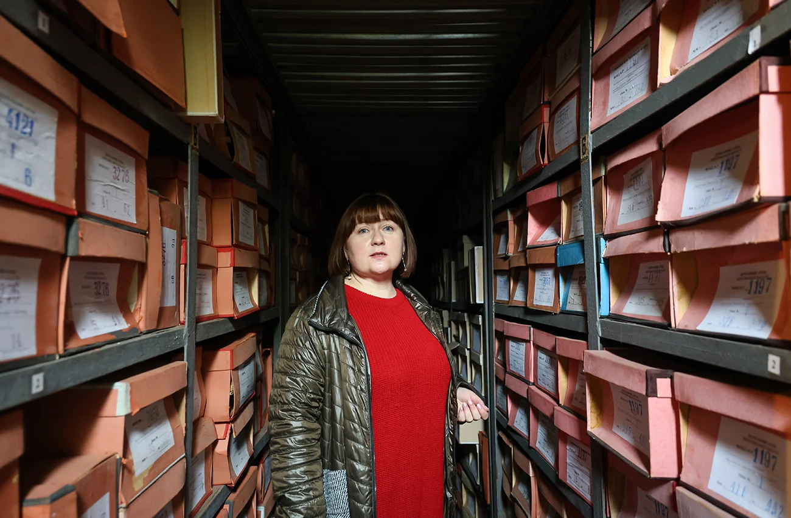
"They were taking everything, as we later realized, shelf by shelf, floor by floor. What they didn't have time to take, they left behind. They started with the main building and took about 30% of what was stored in the archive overall. You can imagine how around 50 strong Russian soldiers were continuously taking documents out of here, loading them into huge trucks. This went on for about a week," she said.
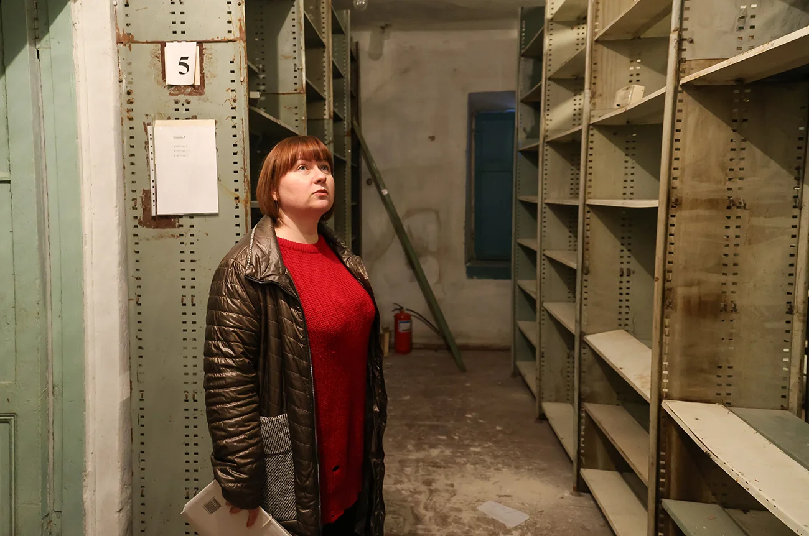
She explains that the occupiers took everything indiscriminately, without any particular logic or system. In some collections, the Russians took a few boxes from the middle, leaving the beginning and end untouched. This negligence, Iryna notes, preserved many important documents for us. However, it left behind the void and chaos of war: broken windows, a damaged façade, and empty shelves.
It is impossible to assess the damage from the theft because archival documents cannot be measured in monetary terms, and the state does not have the funds to insure each document. Here, historical value is the measure. For those studying their family history, the census registers were particularly interesting—documents that recorded the results of population censuses in the Russian Empire in the 18th and first half of the 19th centuries. After the robbery, a few registers remained in the archive, and some were digitized earlier, but not all: some documents were so large they couldn't fit into the scanner. The staff did not want to unbind them because the original whale baleen was used in the stitching, making the binding itself historically valuable.
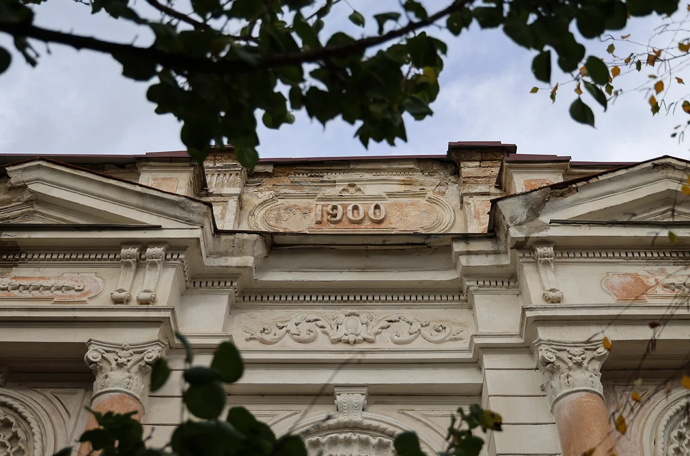
"If I start listing everything that was valuable, I could go on for hours. But we deeply regret some documents. For those who have worked in the archive for decades, like me, these documents become like family. You begin to converse with them... I probably cried for the second time during the war when I entered the archive after it was demined on December 3rd and saw the mess, the plundered storage areas. It felt like life had stopped. But we cleaned, washed, and rearranged things back in place," shared the archive director.
Ms. Iryna adds that the Russians did not just rob their archive.
"They took documents from all institutions: museums, libraries, civil registry offices, and courts. Because we are deeply interested in research and Ukrainian history, our archive is being actively discussed. But we should not forget that we were not the only ones in this system of theft. We were the first archival institution liberated by our military, but we were not the first archive captured by Russian forces."
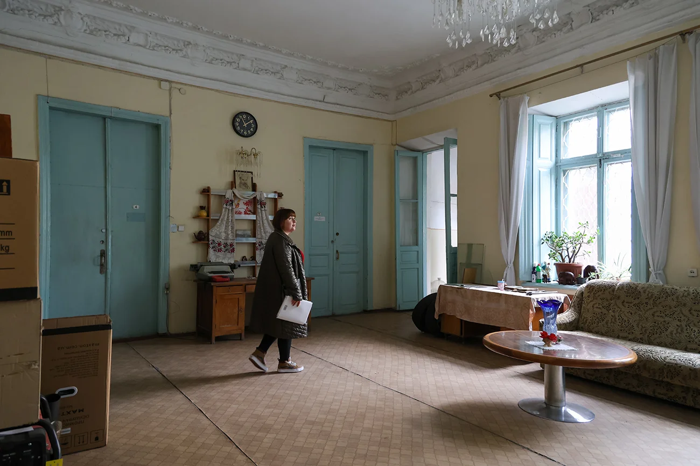
After the liberation of Kherson, the archive team began checking and restoring the collections as soon as they received permission. Thanks to systematic and years-long digitization efforts, they managed to save and restore most of the collection. The Russians did not even access some collections, likely due to a lack of time, while some documents were hidden by archivists in their homes at the beginning of the invasion.
In the early days of the war, the staff could not quickly evacuate the evacuation lists, which the archive keeps in case of an emergency, because archives are not classified as priority critical infrastructure or essential services. By February 25th, Kherson was surrounded; although the occupiers entered the city in early March, they captured the ring road immediately and advanced in a column towards Mykolaiv. People left at their own risk, taking rural roads.
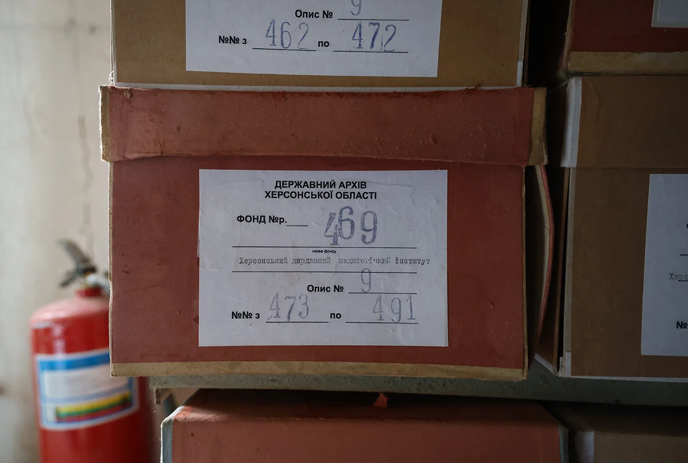
The only thing they managed to do before the Russians arrived, Ms. Iryna recalls, was to destroy secret storage documents, which every archive has. "According to all regulations, if we understand that they may be captured, we must destroy them or take them out. Since we couldn't physically remove them, we had to destroy them, for which acts were drawn up and submitted to the State Archives of Ukraine."
"When we gathered ourselves after the first weeks of the war, we started gradually taking out copying equipment: laptops, computers. Of course, not everything, because it was very difficult, but we took working sets to digitize the scientific-reference apparatus at home. We digitized descriptions and sent them to those who had moved to government-controlled areas through cloud storage, and then they uploaded them to the website. So the archive was physically under occupation, but we continued to work at least partially. And already in April-May, when we were in deep occupation, we started taking out some of the oldest cases—those we found interesting as researchers and archivists. So we took out some documents from the pre-1917 period, and they survived because we simply hid them in our homes."
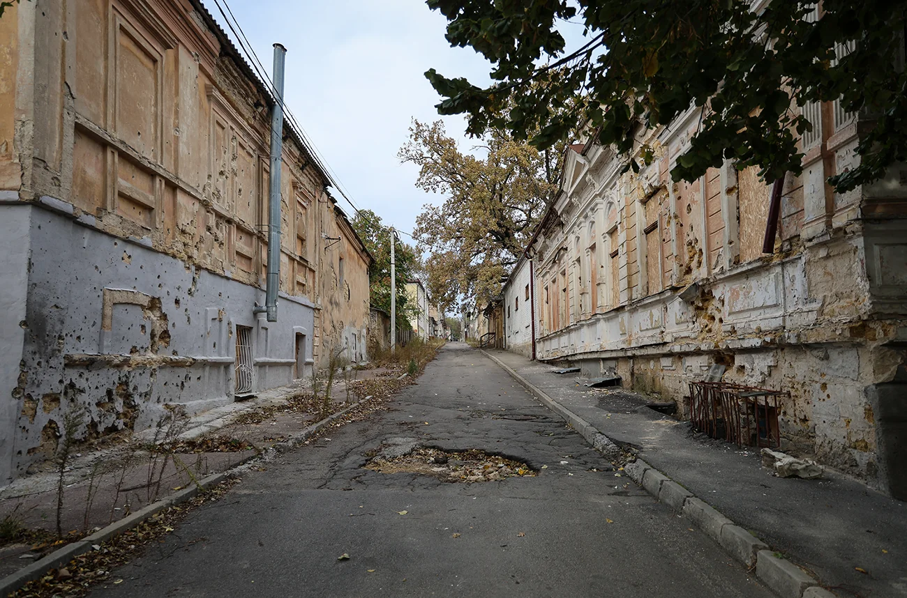
Currently, archive staff have established that over 200,000 units were stolen. But Ms. Iryna suggests that they will likely have to continue checking collections for the next year, as the Russians shuffled them around. Sometimes archivists had written an act of theft for one storage area but later found the documents in another.
Now the archive team is doing everything possible to keep the institution running: providing archival references, organizing online and live document exhibitions, creating new collections, finding duplicate documents—copies that were supposed to be disposed of but now replace stolen documents. The user collection remains, and three employees continue to scan and publish the documents that have been preserved.
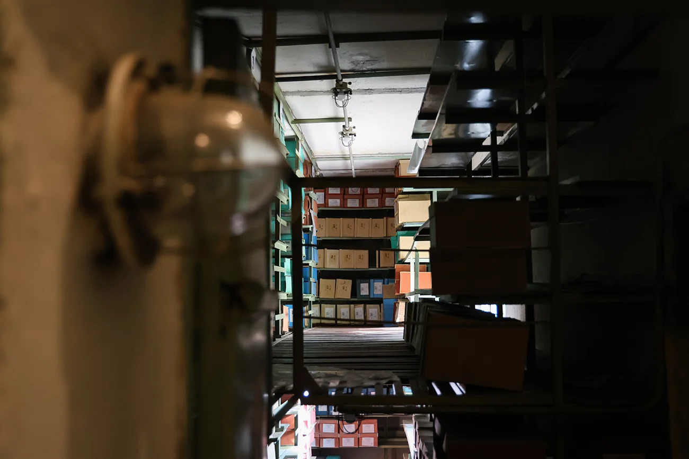
Digitization of the documents in the archive began five years before the start of full-scale hostilities. Initially using a few cameras, then later with the help of contactless scanners. The more scanning equipment became available, the faster the process became. In parallel, archive staff uploaded digitized documents to the website and actively participated in digitization programs. "Before the war, we completed a large project with the Museum of the History of the Holocaust. They digitized thousands of documents related to the 1917-1955 period and the history of Jews in the Kherson region. In this region, the Pale of Settlement of the Jewish population was established, so many Jews lived here during the Russian Empire, and then an entire Jewish national district was created. Kherson suffered greatly during World War II, with significant repressions and many mass graves of murdered Jews. Therefore, the Museum of the History of the Holocaust team was interested in how Jews lived in the post-war period, whether they returned to Kherson, and how the national composition of the area changed. We continue to upload documents from this project. It should be noted that some of these collections remained, while others were stolen, so thanks to this project, we have digital copies of these collections."
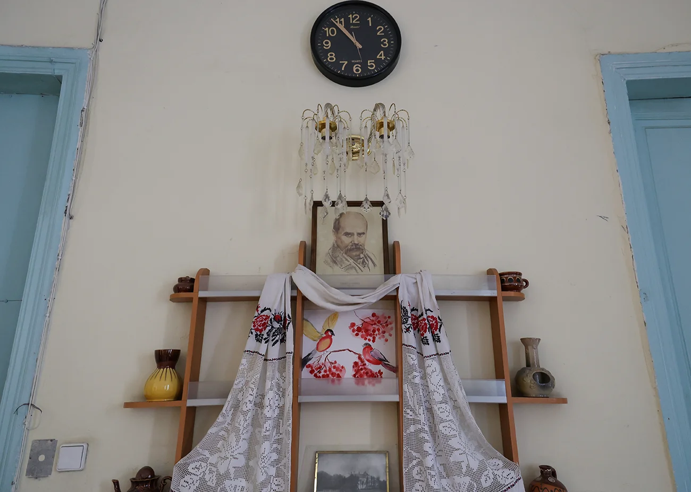
Why do the Russians want the archival documents of the Kherson region? Perhaps to hide history, suggests Iryna Lopushynska. "For rewriting history, they don't need our documents. They can rewrite it without our documents. They believe that if there is no document, no evidence, then there is no proof. But we provided many descriptions, registers of collections, and guides; we had many online exhibitions of original documents, and it's all available online. So it's hard to hide anything because it has already been shared with users and historians." Ms. Iryna points out that there is no point in assessing the Russians' motivation because their actions defy logic.
"I understand that they were trying to establish fake institutions in the occupied territories of the Kherson region to provide services to citizens. They were attempting to show museums and claimed that an archive with the same name as ours started working in the Kherson region. So I understand that these documents were taken to continue the work of these bodies. But whether they succeeded, I don't track, honestly. We have our institution, and we work."
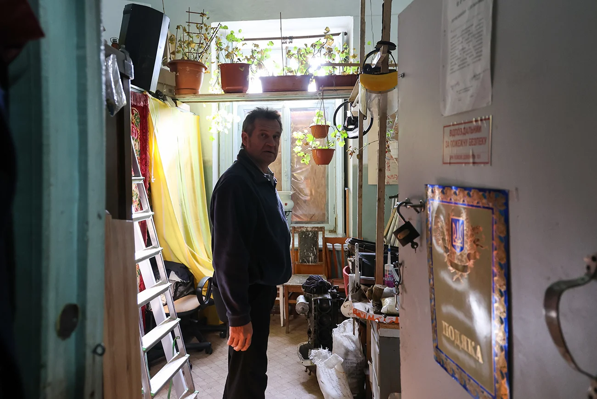
Before the large-scale war, the archive's staff numbered 40 people. People began leaving the occupied territory in April, taking the risk and standing in lines for 5-6 days. Many left when heavy shelling began after the liberation of Kherson. Currently, 27 people work in the archive. The archive director told us that the staffing situation is ambiguous: "On the one hand, the city is liberated, the archive works, we provide jobs, we pay salaries. On the other hand, there is a danger to people's lives. Here, each person chooses how to act. Since we are a structural division of the Kherson Regional Military Administration, we must work at the location of the administration. So some people resigned because they found jobs elsewhere. Some want to return but are waiting for safer times. This is a typical story for border, front-line territories."
"Each of our employees," Iryna emphasizes, "works for two or three, but we are now on a kind of upswing. I don't just go to work because they pay me a salary and because I need to earn pension credit. Now I have a clear understanding of what our team is doing and what we must do in this situation."
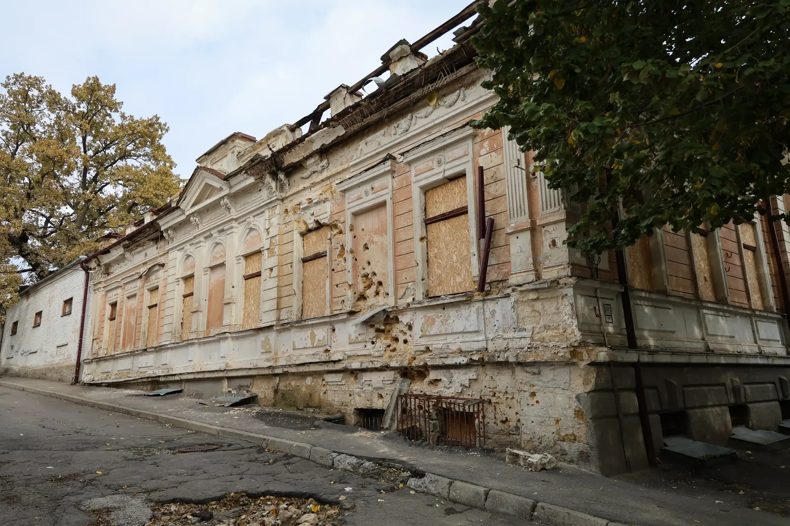
But psychologically, it is challenging, she admits: "Especially when you drive and see destroyed buildings, especially buildings flooded due to the destruction of the Kakhovka dam. The dam breach hit everyone hard. The water didn't reach the archive; it stopped 50 meters away. That was our longest working day—13 hours. We were saving our underground storage collections because we didn't know if the water would reach or not, as we were within the potential flood zone."
On the day of the Kakhovka dam destruction, Ms. Iryna received a call at 6:30 a.m. At 7 a.m., she was already at work. Colleagues gathered on their own, without being asked. They arrived on foot, by taxi, and worked from 7:30 a.m. to 8 p.m. saving the collections. "We moved around 150 storage units that day. It's an unreal amount. Those who work in the storage department said it was impossible, and they still remind me that they didn't believe we could do it. We were very scared. Most of our team lived in areas not affected by flooding, so we understood that our houses would remain intact, and we could work in the archive. If colleagues' homes were in the flood zone, the situation would have been different."
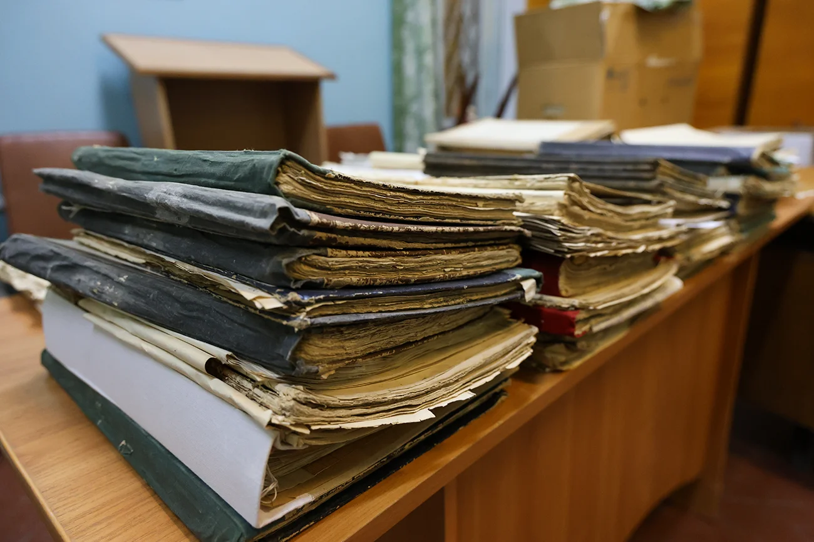
The destruction of the Kakhovka dam increased humidity in the archive, and mold began to appear. Bactericidal lamps, window glazing film, and air dehumidifiers from foreign donors helped address the consequences. But such help is targeted. Since the archive belongs to state institutions, it cannot use humanitarian aid by law, only state funds. Although some changes in the law were made since the start of the war, they did not affect archives. The changes concern state institutions that distribute humanitarian aid among the underprivileged and ensure the region's vital functions—tasks that archives do not handle.
The archive now receives better budget funding, allowing them to purchase necessary items. However, staff cannot repair the damage due to ongoing combat operations. "We only record the facts of destruction. There were strikes near the archive's second building. There was a mortar attack, and all the windows were shattered. We can't restore that now because you don't know when it will happen again, and we were only able to restore the material-technical base. We restored our computers, scanning equipment stolen by the Russians—things like mice, flash drives, scanners, copiers, and printers. That is, without which it's very difficult to work. We restored the internet and phone connection and are now working on restoring video surveillance."
The blackouts in Kherson last fall and winter did not impact it as much as in Kyiv. Iryna joked with her family that she was going to Kherson because there was power there. So the archive's work is complicated not so much by power outages as by broken windows and damaged roofs, which can cause water leaks: "No one is going up there to fix the roof now because 800 meters or a kilometer away are Russian soldiers (the archive is located near the left bank of the Dnipro, which is still occupied). No one is going to risk a person's life in this situation. So we try to patch the holes somehow from the inside, not from the outside." But there are hundreds of such buildings in Kherson. "We are not unique in this situation in the city, as strikes hit any institution: private homes, medical and educational institutions. We are no different from any other building in the city of Kherson, so we just try to do our job," added the archive director.
In addition to checking the collections and restoring stolen cases, the archive team is creating a collection of documents on the history of the Russian-Ukrainian war in the Kherson region. "We collect these documents to show future generations what kind of 'Russian world' the Russians brought to this territory. These are documents of resistance, when in February-March Kherson residents protested all over the region against the Russian military. These are documents on the destruction of the Kakhovka dam, on the liberation of the city. These include photos and people's memories. So we started documenting all this and transferring it to the archive. We created a separate collection for photographer Alexander Konyakov, who documented all this."
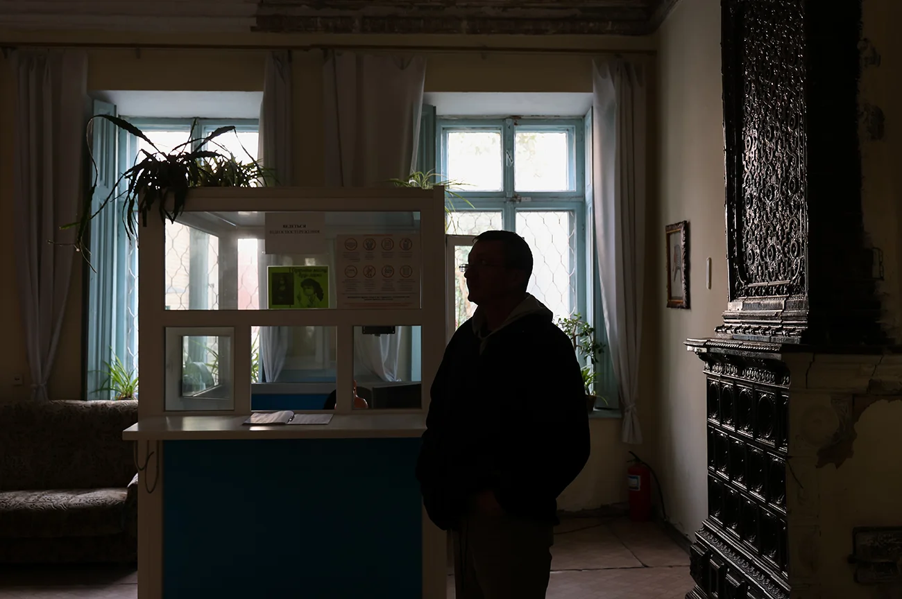
In addition, Kherson archive staff work with journalists who are the first to visit strike sites and provide materials to the archive. The archive has also received two new collections. The first is a collection from local historian Dmytro Hanchenko, who worked in the archive for a long time and died during the occupation due to a prolonged illness and lack of medication. According to Ms. Iryna, this is a unique collection representing the Kherson region. Archivists have already formed 72 cases and still have a lot of work ahead.
The second collection consists of documents from Doctor of Sociology Mykola Homanyuk, who conducted research during the occupation and after the city's liberation. Iryna noted that "these are incredible documents that they agreed to transfer to us for storage. So we actively began forming collections. We joke that we take everything we see related to the war. We try to preserve as much as possible for future generations because now we can't assess the value or lack of value of our work. Only time will tell."
With the support of the Alfred P. Sloan Foundation and assistance from IIE.